Fetcher is a Zig library registry that saves you from the headache and despair of searching for dependencies. It has it all: the packages you need, smart search, and installation instructions. The Zig ecosystem is set to thrive.
Embrace the niche!